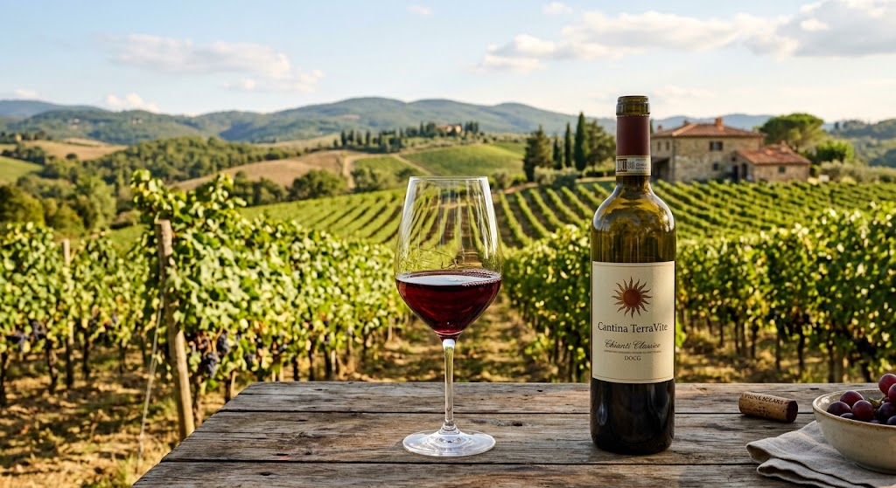
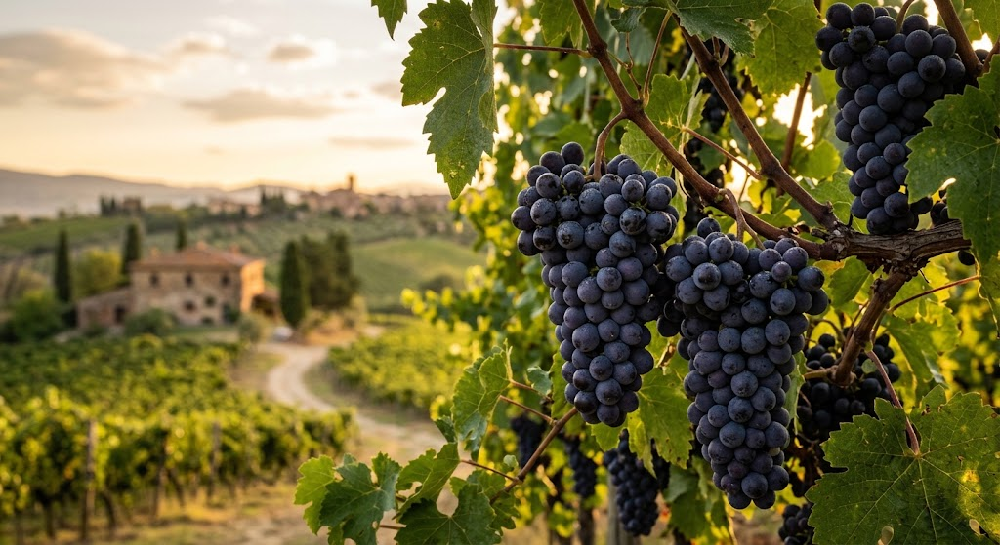
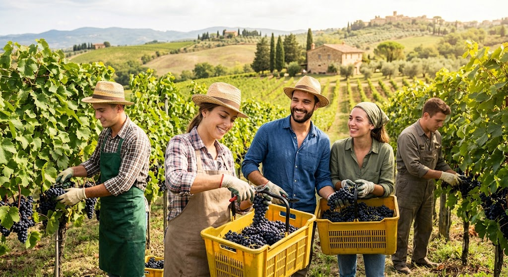
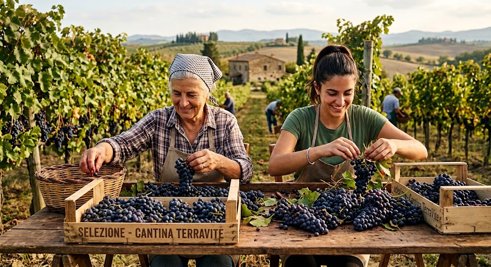
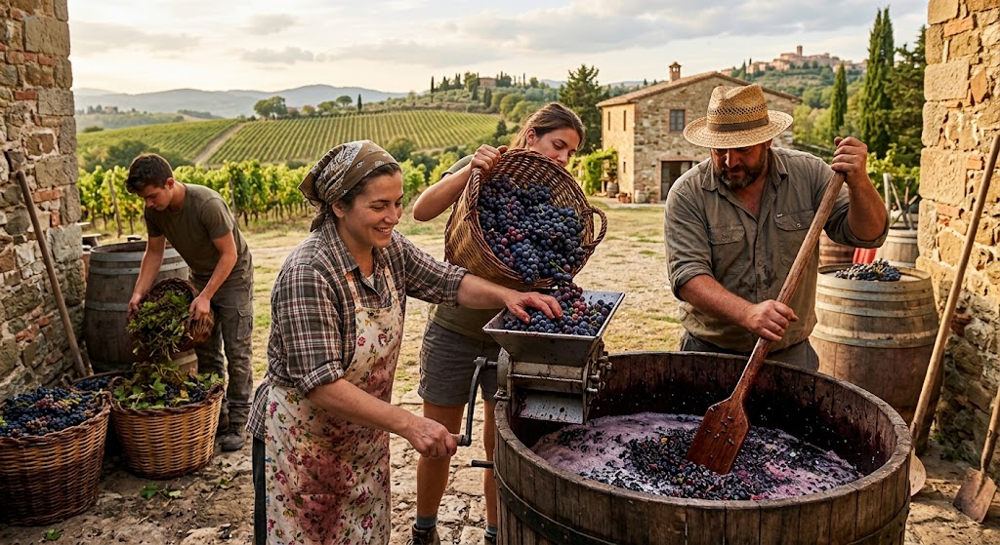
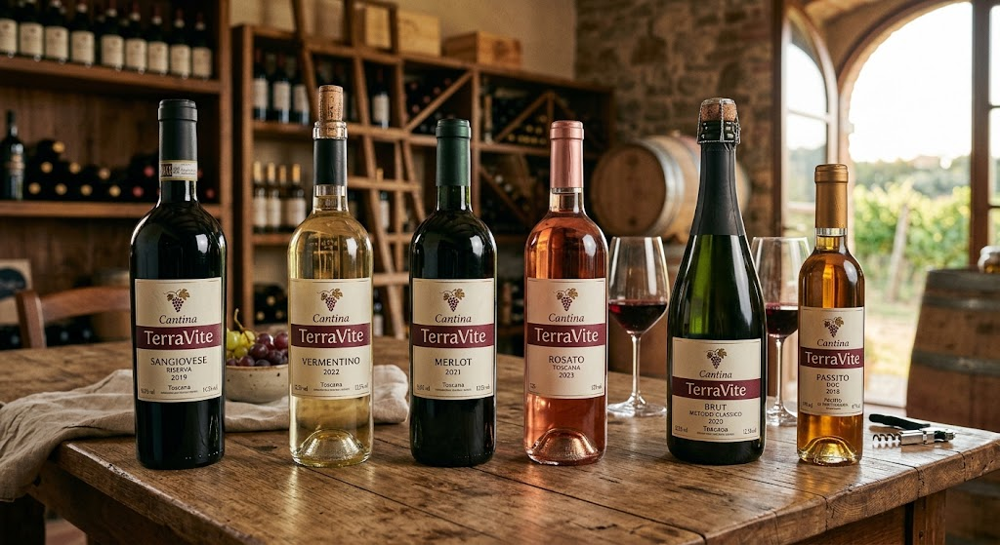
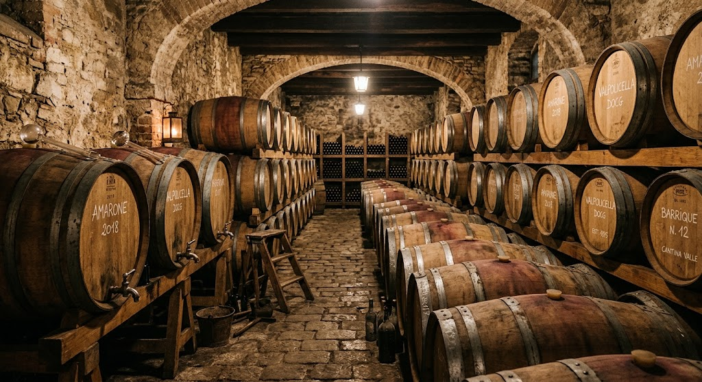

Radici forti, frutti preziosi. Dal 1920.
Fondata nel 1920 sulle colline assolate della nostra penisola, Cantina TerraVite è un'azienda agricola del settore primario dedita alla coltivazione della vite. Da oltre un secolo, la nostra famiglia si tramanda i segreti della terra, curando ogni singolo filare con devozione e rispetto per i cicli naturali.
La raccolta dell' uva è per noi il momento più importante dell'anno: un rito antico in cui le mani esperte dei nostri contadini selezionano solo i grappoli migliori. Uniamo la tradizione agricola secolare alle moderne pratiche di viticoltura sostenibile, per garantire che ogni acino porti con sé l'essenza autentica, i profumi e il carattere inconfondibile del nostro territorio.
La storia della Cantina TerraVite è dunque il racconto di un legame viscerale con le proprie radici, con il territorio che ha visto crescere non solo i raccolti, ma anche una famiglia che ha sempre considerato la terra come una risorsa preziosa da nutrire e arricchire. Dai pomodori e dalle insalate fino alle vigne, la nostra famiglia ha attraversato epoche diverse, superando le sfide di ogni tempo e adattandosi ai cambiamenti con creatività e lungimiranza.
Scarica il report (PDF)





